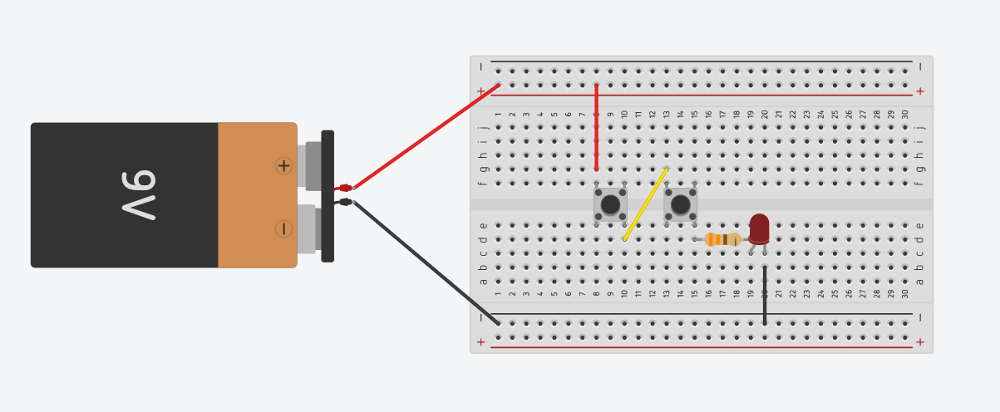
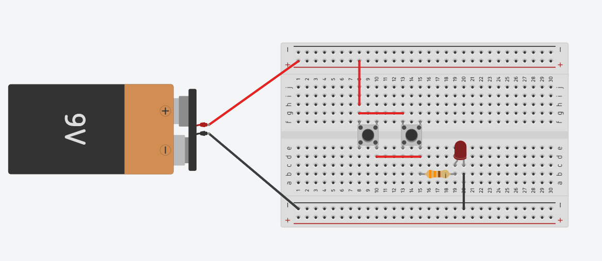

ใบงาน การต่อวงจรไฟกระพริบ
1. วัตถุประสงค์ (Objectives)
- เพื่อศึกษาและต่อวงจรไฟฟ้าแบบอนุกรม (Series) และแบบขนาน (Parallel)
- เพื่อทำความเข้าใจหลักการทำงานของลอจิกเกตแบบ AND และ OR ผ่านอุปกรณ์จริง
2. เครื่องมือและอุปกรณ์ (Materials & Equipment)
- ตัวต้านทาน 330 Ω (R1, R4) จำนวน 2 ตัว
- หลอด LED (ต่างสีกัน) จำนวน 2 ตัว
- สวิตช์ปุ่มกด (Push Button) จำนวน 2 ตัว
- แผงต่อวงจร (Protoboard) และสายจั๊ม
- แหล่งจ่ายไฟ DC 9V
3. วงจรการทดลอง (Schematic Diagram)
รูปที่ 1: วงจร AND Gate (อนุกรม)

รูปที่ 2: วงจร OR Gate (ขนาน)

4. ลำดับขั้นการทดลอง
ตอนที่ 1: วงจร AND Gate (การต่อแบบอนุกรม)
คำอธิบาย: วงจรนี้เปรียบเสมือน "ด่านตรวจ" ที่ต้องผ่านเงื่อนไขให้ครบทุกด่าน ไฟถึงจะติด
วิธีการต่อวงจร:
- ต่อไฟบวก (+5V) เข้าขาข้างหนึ่งของ ปุ่มกด A
- นำขาอีกข้างของปุ่มกด A ไปต่อเข้ากับขาเข้าของ ปุ่มกด B
- นำขาออกของปุ่มกด B ไปต่อกับ ตัวต้านทาน 220 Ω
- ต่อปลายตัวต้านทานเข้า ขาบวก (+) LED และต่อ ขาลบ (-) LED ลงกราวด์
ตารางบันทึกผล (Truth Table)
| การกระทำที่ปุ่ม A |
การกระทำที่ปุ่ม B |
ผลลัพธ์ที่หลอด LED |
สรุปทางตรรกะ (0/1) |
| ไม่กด (0) |
ไม่กด (0) |
|
0 AND 0 = ... |
| ไม่กด (0) |
กด (1) |
|
0 AND 1 = ... |
| กด (1) |
ไม่กด (0) |
|
1 AND 0 = ... |
| กด (1) |
กด (1) |
|
1 AND 1 = ... |
ตอนที่ 2: วงจร OR Gate (การต่อแบบขนาน)
คำอธิบาย: วงจรนี้เปรียบเสมือน "ทางเลือก" ไม่ว่าจะมาทางไหน ก็ไปถึงจุดหมายได้
วิธีการต่อวงจร:
- ต่อไฟบวก (+5V) เข้าขาเข้าของ ปุ่มกด A และ ปุ่มกด B (จุดเริ่มต้นเดียวกัน)
- นำขาออกของ ปุ่มกด A และ ปุ่มกด B มารวมกันที่จุดเดียวกัน
- จากจุดรวม ให้ต่อเข้ากับ ตัวต้านทาน 220 Ω
- ต่อปลายตัวต้านทานเข้า ขาบวก (+) LED และต่อ ขาลบ (-) LED ลงกราวด์
ตารางบันทึกผล (Truth Table)
| การกระทำที่ปุ่ม A |
การกระทำที่ปุ่ม B |
ผลลัพธ์ที่หลอด LED |
สรุปทางตรรกะ (0/1) |
| ไม่กด (0) |
ไม่กด (0) |
|
0 OR 0 = ... |
| ไม่กด (0) |
กด (1) |
|
0 OR 1 = ... |
| กด (1) |
ไม่กด (0) |
|
1 OR 0 = ... |
| กด (1) |
กด (1) |
|
1 OR 1 = ... |
5. สรุปและคำถามท้ายการทดลอง